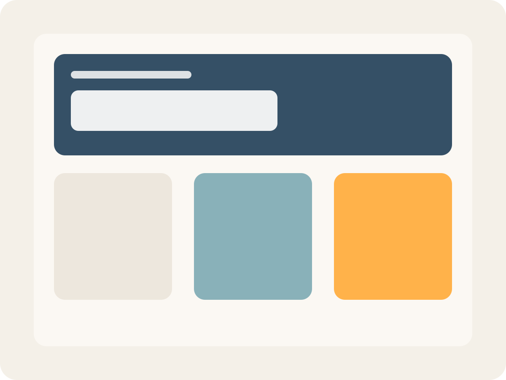

Content production is too slow.
AI Content Systems
AI content systems for brands that need speed without compromise.
Silent Studio creates structured workflows, reusable templates, and automation layers that help teams produce more while keeping the brand sharp, consistent, and controlled.
Structured production
Reusable systems and templates
Controlled scale
Consistency without drift
Introduction
Content demand keeps growing. Most teams respond by adding more tools, more manual steps, and more last-minute production. The result is slower output, uneven quality, and brand inconsistency across channels.
Silent Studio builds systems that bring order to that process. Not random content. Not one-off automation. Structured brand production designed to scale.
Problem
More content should not mean less control.
Many teams are dealing with the same friction as content volume rises and execution becomes harder to manage across formats, channels, and internal workflows.
As volume increases, consistency usually drops. What starts as a workflow issue becomes a brand issue.
Brand execution shifts from asset to asset.
Teams rely on too many disconnected tools.
Repetitive tasks absorb time that should go into better work.
Scaling across formats and channels creates quality issues.
Internal teams need more output, but not more chaos.
Solution
A system built for scale, consistency, and speed.
Silent Studio designs Artificial Intelligence content and brand automation systems that turn production into a more structured, repeatable process.
The goal is simple: help teams move faster without lowering the standard.
Reusable design templates
Artificial Intelligence-assisted content generation
Modular creative systems
Workflow design across tools and teams
Approval-aware production logic
Analytics and dashboard layers
Future-ready foundations for custom trained agents
Process
Designed as a system, not a shortcut.
The work is structured to move from diagnosis to repeatable execution, so the final system is usable, not theoretical.
Review the current content workflow, brand assets, bottlenecks, and points of inconsistency.
Define the system: templates, content logic, visual rules, production steps, and automation opportunities.
Create the working components, from branded templates and asset structures to automation flows and content patterns.
Test output, improve consistency, remove friction, and adjust the system for real use.
Support broader rollout across campaigns, channels, and teams with a setup that stays usable over time.

Why it works
Because good systems protect good brands.
The strongest creative operations are not built on speed alone. They are built on clear standards, reusable structures, and production logic that reduces drift.
Silent Studio combines brand thinking, design systems, and modern Artificial Intelligence workflows to help teams produce at higher volume while keeping the work aligned.
This is where craft and automation meet:
visual consistency
faster turnaround
cleaner workflows
fewer repetitive production steps
stronger control across outputs
more room for judgment where it matters
Capabilities
What Silent Studio helps build
AI Content Systems
Structured approaches to generating content at scale while keeping output aligned with the brand.
Brand Automation
Workflow layers that reduce manual repetition and connect creative production more intelligently.
Design Templates
Reusable assets and systems built for speed, consistency, and easier handoff.
Marketing Workflows
Clearer production paths across teams, channels, formats, and update cycles.
Analytics Layer
Dashboards and measurement structures that help teams see what is being produced and how the system is performing.
Future Extensions
Foundations for more advanced automations, including custom trained agents where relevant.
Proof
Built for teams that need output and standards.
Silent Studio is grounded in real brand and production work: identity systems, campaign design, event ecosystems, content workflows, template logic, and Artificial Intelligence-assisted creative pipelines.
The focus is not experimentation for its own sake. It is building production-ready systems that help brands stay consistent while expanding what their teams can deliver.
Final CTA
Build a content system that can actually scale.
If your team needs more output but cannot afford more inconsistency, Silent Studio can help design a clearer, stronger production system.